전기기능장 (2013-04-14 기출문제)
1과목: 임의구분
1. 다이오드의 애벌런치(avalanche)현상이 발생되는 것을 옳게 설명한 것은?
- 역방향 전압이 클 때 발생한다.
- 순방향 전압이 클 때 발생한다.
- 역방향 전압이 적을 때 발생한다.
- 순방향 전압이 적을 때 발생한다.
(정답률: 80%)

2. 공기 중 10[Wb]의 자극에서 나오는 자기력선의 총 수는?
- 약 6.885×106개
- 약 7.985×106개
- 약 8.885×106개
- 약 90.92×106개
(정답률: 63%)
3. 컴퓨터의 중앙처리장치에서 사칙연산 등의 연산 결과를 일시적으로 저장해 두는 레지스터는?
- 누산기
- 인덱스레지스터
- 스택포인터
- 플래그
(정답률: 70%)
4. 용량 10[kVA]의 단권 변압기에서 전압 3000[V]를 3300[V]로 승압시켜 부하에 공급할 때 부하용량 [kVA]는?
- 1.1[kVA]
- 11[kVA]
- 110[kVA]
- 990[kVA]
(정답률: 66%)
5. 유니온 커플링의 사용 목적으로 옳은 것은?
- 금속관 상호의 나사를 연결하는 접속
- 금속관의 박스와 접속
- 안지름이 다른 금속관 상호의 접속
- 돌려 끼울 수 없는 금속관 상호의 접속
(정답률: 88%)
6. 공급점 30[m]인 지점에 70[A], 45[m]인 지점에 50[A], 60[m]인 지점에 30[A]의 부하가 걸려있을 때, 부하 중심까지의 거리를 산출하여 전압강하를 고려한 전선의 굵기를 결정하고자 한다. 부하중심까지의 거리는 몇 [m]인가?
- 62[m]
- 50[m]
- 41[m]
- 36[m]
(정답률: 72%)
7. 2개의 전력계를 사용하여 평형부하의 3상 회로의 역률을 측정하고자 한다. 전력계의 지시가 각각 1[kW] 및 3[kW]라 할 때 이 회로의 역률은 약 몇 [%]인가?
- 58.8
- 63.3
- 75.6
- 86.6
(정답률: 56%)
8. 그림과 같은 회로에서 단자 a, b에서 본 합성 저항[Ω]은?
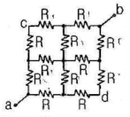
- 1/2R
- 1/3R
- 3/2R
- 2R
(정답률: 82%)
9. 입출력 주소와 기억장치 주소를 구별하는 입출력 방식은?
- ISOLATED I/O
- MEMORY MAPPED I/O
- COUNTER MAPPED I/O
- REGISTER MAPPED I/O
(정답률: 45%)
10. 그림은 사이클로 컨버터의 출력전압과 전류의 파형이다. θ2-θ3구간에서 동작되는 컨버터와 동작모드는?(문제 오류로 그림파일이 없습니다. 정답은 1번입니다. 정확한 그림파일 내용을 아시는 분께서는 관리자 메일로 부탁 드립니다.)
- P 컨버터, 순변환
- P 컨버터, 역변환
- N 컨버터, 순변환
- N 컨버터, 역변환
(정답률: 81%)
11. 사용전압이 220[V]인 경우에 애자사용공사에서 전선과 조영재와의 이격거리는 최소 몇 [㎝] 이상이어야 하는가?
- 2.5
- 4.5
- 6.0
- 8.0
(정답률: 76%)
12. 그림과 같은 회로에서 소비되는 전력은?
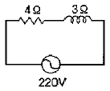
- 5808[W]
- 7744[W]
- 9680[W]
- 12100[W]
(정답률: 71%)
13. 주파수 60[㎐]로 제작된 3상 유도전동기를 동일한 전압의 50[㎐]의 전원으로 사용할 때 나타나는 현상은?
- 철손 감소
- 무부하전류 증가
- 자속 감소
- 속도 증가
(정답률: 78%)
14. 직류기에 주로 사용하는 권선법으로 다음 중 옳은 것은?
- 개로권, 환상권, 이층권
- 개로권, 고상권, 이층권
- 폐로권, 고상권, 이층권
- 폐로권, 환상권, 이층권
(정답률: 78%)
15. 저항 10[Ω], 유도리액턴스 10[Ω]인 직렬회로에 교류 전압을 인가할 때 전암과 이 회로에 흐르는 전류와의 위상차는 몇 도 인가?
- 60°
- 45°
- 30°
- 0°
(정답률: 70%)
16. 3상 배전선로의 말단에 늦은 역률 80[%], 150[kW]의 평형 3상 부하가 있다. 부하점에 부하와 병렬로 전력용 콘덴서를 접속하여 선로손실을 최소화 하려고 한다. 이 경우 필요한 콘덴서의 용량은? (단, 부하단 전압은 변하지 않는것으로 한다.)
- 1⑤.5[kVA]
- 112.5[kVA]
- 135.5[kVA]
- 150.5[kVA]
(정답률: 64%)
17. 동기 전동기에서 제동권선의 사용 목적으로 가장 옳은 것은?
- 난조 방지
- 정지시간의 단축
- 운전토크의 증가
- 과부하 내량의 증가
(정답률: 91%)
18. 분류기의 배율을 나타낸 식으로 옳은 것은? (단, Rs는 분류기 저항, r은 전류계의 내부저항이다.)
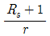
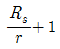
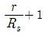
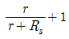
(정답률: 62%)
19. 저압 옥내 간선에서 분기하여 전기 사용 기계 기구에 이르는 저압 옥내 전로의 분기 개소에 시설하는 개폐기 및 과전류 차단기는 분기점에서 전선의 길이가 몇 [m]이내인 곳에 시설하여야 하는가?
- 1.5[m]
- 3.0[m]
- 5.5[m]
- 8.0[m]
(정답률: 86%)
20. 2진수 011001102을 2의 보수는?
- 01100110
- 01100111
- 10011001
- 10011010
(정답률: 70%)
2과목: 임의구분
21. 가공 전선로에 사용하는 원형 철근 콘크리트주의 수직 투영 면적 1[m2]에 대한 갑종 풍압 하중은?
- 333[Pa]
- 588[Pa]
- 745[Pa]
- 882[Pa]
(정답률: 89%)
22. 저압의 지중전선이 지중약전류 전선 등과 접근하거나 교차하는 경우 상호간의 이격거리가 몇 [cm]이하인 때에는 지중전선과 지중약전류 전선 등 사이에 견고한 내화성의 격벽을 설치하는가?
- 20[㎝]
- 30[㎝]
- 50[㎝]
- 60[㎝]
(정답률: 86%)
23. 무한히 긴 직선도체에 전류 I[A]를 흘릴 때 이 전류로 부터 r[m] 떨어진 점의 자속밀도는 몇[Wb/m2]인가?
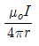
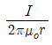
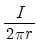
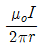
(정답률: 60%)
24. 소형 유도전동기의 슬롯을 사구(skew slot)로 하는 이유는?
- 기동 토크를 증가시키기 위하여
- 게르게스 현상을 방지하기 위하여
- 제동 토크를 증가시키기 위하여
- 크로우링을 방지하기 위하여
(정답률: 79%)
25. 전력용 콘덴서의 내부소자 사고 검출방식이 아닌 것은?
- 콘덴서 외함 평창변위 검출방식
- 중성점간 전압 검출방식
- 중성점간 전류 검출방식
- 회선 전류 위상비교 검출방식
(정답률: 63%)
26. 영구자석을 회전자로 하고, 회전자의 자극 근처에 반대 극성의 자극을 가까이 놓고 회전시키면, 회전자는 이동하는 자석에 흡인되어 회전하는 전동기는?
- 유도 전동기
- 직권 전동기
- 동기 전동기
- 분권 전동기
(정답률: 65%)
27. 자극의 흡인력 F[N]과 자속밀도 B[wb/m2]의 관계로 옳은 것은? (단,
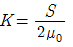
이다.)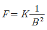
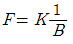
- F=KB2
- F=KB
(정답률: 61%)
28. 3상 유도 전동기의 2차동손, 2차입력, 슬립을 각각 Pc, P2, s라 하면 관계식은?
- Pc=sP2
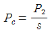
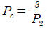
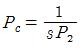
(정답률: 84%)
29. 정격 30[kVA], 1차측 전압 6600[V], 권수비 30인 단상변압기의 2차측 정격전류는 약 몇 [A]인가?
- 93.2[A]
- 136.4[A]
- 220.7[A]
- 455.5[A]
(정답률: 71%)
30. 진리표와 같은 출력의 논리식을 간략화한 것은?
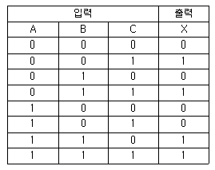
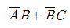
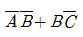
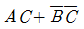
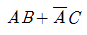
(정답률: 56%)
31. 2진수 (1011)2를 그레이코드(Gray Code)로 변환한 값은?
- (1111)G
- (1101)G
- (1110)G
- (1100)G
(정답률: 69%)
32. 나전선 상호 또는 나전선과 절연전선, 캡타이어케이블 또는 케이블과 접속하는 경우의 설명으로 옳은 것은?
- 접속슬리브(스프리트슬리브 제외), 전선 접속기를 사용하여 접속하여야 한다.
- 접속부분의 절연은 전선 절연물의 80[%] 이상의 절연 효력이 있는 것으로 피복하여야 한다.
- 접속부분의 전기저항을 증가시켜야 한다.
- 전선의 강도는 30[%]이상 감소하지 않아야 한다.
(정답률: 80%)
33. 공용접지의 특징으로 적합한 것은?
- 다른기기 계통에 영향이 적다.
- 보호대상물을 제한할 수 있다.
- 접지전극수가 적어 시공면에서 경제적이다.
- 접지공사비가 상승한다.
(정답률: 86%)
34. 다음 설명 중 옳은 것은?
- 인덕턴스를 직렬 연결하면 리액턴스가 커진다.
- 저항을 병렬 연결하면 합성저항은 커진다.
- 콘덴서를 직렬 연결하면 용량이 커진다.
- 유도 리액턴스는 주파수에 반비례한다.
(정답률: 71%)
35. 용량 10[kVA], 임피던스 전압 5[%]인 변압기 A와 용량 30[kVA], 임피던스 전압 1[%]인 변압기 B를 병렬 운전시켜 36[kVA] 부하를 연결할 때 변압기 A의 부하 분담은 몇 [kVA]인가? (문제 오류로 실제 시험에서는 모두 정답처리 되었습니다. 여기서는 1번을 누르면 정답 처리 됩니다.)
- 4.5[kVA]
- 6[kVA]
- 13.5[kVA]
- 18[kVA]
(정답률: 59%)
36. 평균 구면광도 100[cd]의 전구 5개를 지름 10[m]인 원형의 방에 점등할 때, 방의 평균조도[lx]는? (단, 조명률은 0.5, 감광보상률은 1.5이다.)
- 약 26.7[lx]
- 약 35.5[lx]
- 약 48.8[lx]
- 약 59.4[lx]
(정답률: 70%)
37. 카르노도의 상태가 그림과 같을 때 간략화된 논리식은?
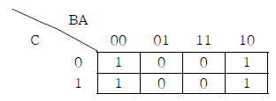
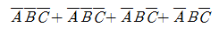
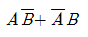
- A
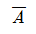
(정답률: 68%)
38. 어떤 교류 3상3선식 배전선로에서 전압을 200[V]에서 400[V]로 승압하였을 때 전력 손실은? (단, 부하용량은 같다.)
- 2배로 증가한다.
- 4배로 증가한다.
- 1/2로 감소한다.
- 1/4로 감소한다.
(정답률: 63%)
39. 자동화재탐지설비의 감지기회로에 사용되는 비닐절연 전선의 최소 규격은?
- 1.0[mm2]
- 1.5[mm2]
- 2.5[mm2]
- 4.0[mm2]
(정답률: 74%)
40. 120°씩 위상차를 갖는 3상 평형전원이 아래 3상 전파정류회로에 인가되어 있는 경우 다음 설명 중 적절하지 않은 것은?
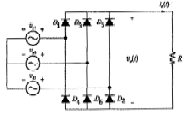
- 3상 전파 정류회로의 출력전압(V0(t))은 3상 반파 정류회로의 경우 보다 리플(ripple) 성분의 크기가 작다.
- 상단부 다이오드(D1, D3, D5)는 임의의 시간에 3상 전원중 전압의 크기가 양의 방향으로 가장 큰 상에 연결되어 있는 다이오드가 온(On) 된다.
- 3상 전파 정류회로의 출력전압 (V0(t))은 120°의 간격을 가지고 전원의 한 주기당 각 상전압의 크기를 따라가는 3개의 펄스로 나타난다.
- 출력전압 (V0(t)) 의 평균치는 전원 선간전압 실표치의 약 1.35배이다.
(정답률: 69%)
3과목: 임의구분
41. 직류 복권전동기 중에서 무부하 속도와 전부하 속도가 같도록 만들어진 것은?
- 과복권
- 부족복권
- 평복권
- 차동복권
(정답률: 90%)
42. 동기발전기에서 전기자 권선을 단절권으로 하는 목적은?
- 절연을 좋게 한다.
- 기전력을 높게 한다.
- 역률을 좋게 한다.
- 고조파를 제거한다.
(정답률: 81%)
43. D형 플립플롭의 현재 상태[Q]가 0 일 때 다음 상태[Q(t+1)]를 1로 하기 위한 D의 입력 조건은?
- 1
- 0
- 1과0 모두 가능
- Q
(정답률: 72%)
44. 지중 전선로를 직접매설식에 의하여 시설하는 경우 차량 기타 중량물의 압력을 받을 우려가 있는 장소에는 매설 깊이를 몇 [m]이상으로 해야 하는가?(2021년 변경된 KEC 규정 적용됨)
- 0.6[m]
- 1.0[m]
- 1.8[m]
- 2.0[m]
(정답률: 86%)
45. 3상 동기 발전기의 단락비를 산출하는데 필요한 시험은?
- 돌발 단락시험과 부하시험
- 동기화 시험과 부하 포화시험
- 외부 특성시험과 3상 단락시험
- 무부하 포화시험과 3상 단락시험
(정답률: 90%)
46. 명령어의 주소부분에 있는 내용이 데이터가 되는 주소 지정방식은?
- 즉치지정방식
- 직접지정방식
- 간접지정방식
- 인덱스지정방식
(정답률: 43%)
47. PN접합 다이오드의 순방향 특성에서 실리콘 다이오드의 브레이크 포인터는 약 몇 [V]인가?
- 0.2[V]
- 0.5[V]
- 0.7[V]
- 0.9[V]
(정답률: 72%)
48. 다음 중 데이터 전송명령이 아닌 것은?
- LOAD
- INCREMENT
- OUTPUT
- STORE
(정답률: 43%)
49. 다음은 콘덴서형 전동기 회로로서 보조 권선에 콘덴서를 접속하여 보조 권선에 흐르는 전류와 주권선에 흐르는 전류의 위상차를 더욱 크게 한 것으로 회로에 사용한 콘덴서의 목적으로 옳지 않은 것은?
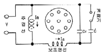
- 정·역 운전에 도움을 준다.
- 운전시에 효율을 개선한다.
- 운전시에 역률을 개선한다.
- 기동 회전력을 크게 한다.
(정답률: 72%)
50. 정부나 공공기관에서 발주하는 전기공사의 물량 산출시 전기재료의 할증률 중 옥내 케이블은 일반적으로 몇[%]값 이내로 하여야 하는가?
- 1[%]
- 3[%]
- 5[%]
- 10[%]
(정답률: 71%)
51. 저압 연접인입선의 시설기준으로 옳은 것은?
- 인입선에서 분기되는 점에서 100[m]를 초과하지 말것
- 폭 2.5[m]를 초과하는 도로를 횡단하지 말 것
- 옥내를 통과하여 시설할 것
- 지름은 최소 2.5[mm2] 이상의 경동선을 사용할 것
(정답률: 78%)
52. 애자사용 공사에 의한 고압 옥내배선의 시설에 있어서 적당하지 않은 것은?
- 전선이 조영재를 관통할 때에는 난연성 및 내수성이 있는 절연관에 넣을 것
- 애자사용 공사에 사용하는 애자는 난연성일 것
- 전선과 조영재와의 이격거리는 4.5[㎝]로 할 것
- 고압 옥내배선은 저압 옥내배선과 쉽게 식별되도록 시설할 것
(정답률: 74%)
53. 고압 및 특고압의 전로에서 절연내력 시험을 할 때 규정에 정한 시험전압을 전로와 대지사이에 몇 분간 가하여 견디어야 하는 가?
- 1분
- 5분
- 10분
- 20분
(정답률: 89%)
54. 은전량계에 1시간 동안 전류를 통과시켜 8.⑤4[g]의 은이 석출되었다면, 이 때 흐른 전류의 세기는 약 얼마인가? (단, 은의 전기적 화학당량은 0.001118[g/C]이다.)
- 2[A]
- 9[A]
- 32[A]
- 120[A]
(정답률: 68%)
55. 검사와 분류 방법 중 검사가 행해지는 공정에 의한 분류에 속하는 것은?
- 관리 샘플링 검사
- 로트별 샘플링검사
- 전수검사
- 출하검사
(정답률: 71%)
56. 다음 중 브레인스토밍(Brainstorming)과 가장 관계가 깊은 것은?
- 파레토도
- 히스토그램
- 회귀분석
- 특성요인도
(정답률: 87%)
57. 단계여유(slack)의 표시로 옳은 것은? (단, TE는 가장 이른 예정일, TL은 가장 늦은 예정일, TF는 총 여유시간, FF는 자유여유시간 이다.)
- TE-TL
- TL - TE
- FF - TF
- TE - TF
(정답률: 70%)
58. c 관리도에서 k = 20 인 군의 총 부적합수 합계는 58이었다. 이 관리도의 UCL, LCL을 계산하면 약 얼마인가?
- UCL = 2.90, LCL = 고려하지 않음
- UCL = 5.90, LCL = 고려하지 않음
- UCL = 6.92, LCL = 고려하지 않음
- UCL = 8.01, LCL = 고려하지 않음
(정답률: 69%)
59. 테일러(F.W. Taylor)에 의해 처음 도입된 방법으로 작업시간을 직접 관측하여 표준시간을 설정하는 표준시간 설정기법은?
- PTS법
- 실적 자료법
- 표준자료법
- 스톱워치법
(정답률: 67%)
60. 공정 중에 발생하는 모든 작업, 검사, 운반, 저장, 정체등이 도식화 된 것이며 또한 분석에 필요하다고 생각되는 소요시간, 운반거리 등의 정보가 기재된 것은?
- 작업분석(Operation Analysis)
- 다중활동분석표(Multiple Activity Chart)
- 사무공정분석(Form Process Chart)
- 유통공정도(Flow Process Chart)
(정답률: 67%)